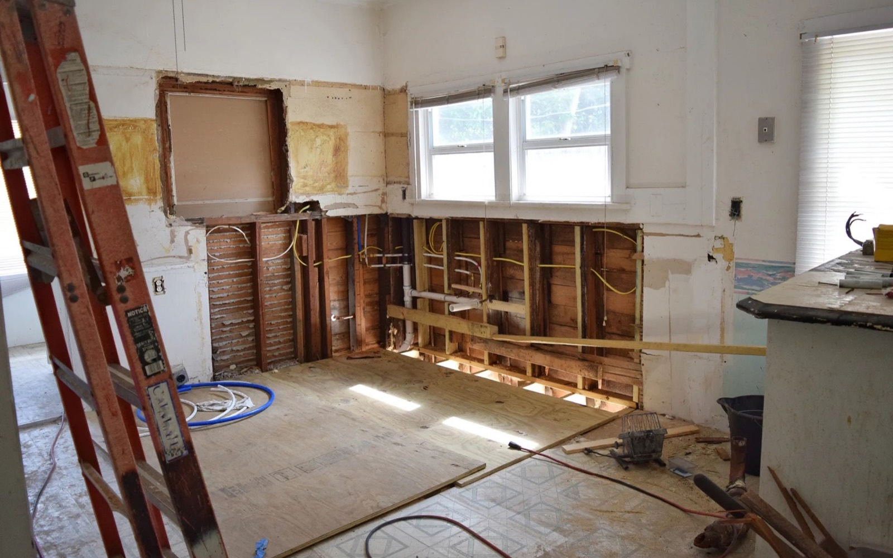

Asheboro NC
Sell an Asheboro house as-is without taking on another project.
America Home Buyers can review houses with repair, cleanout, vacancy, tenant, or inherited-property complications and provide an option to compare.
Fast should not mean uninformed.
Before signing with any buyer, understand who is purchasing, what inspections remain, which costs you may pay, whether the agreement can be assigned, and what happens if closing is delayed.
A direct offer may save repairs and time. A traditional listing may produce more when the property is ready for the market. Compare both when practical.

Asheboro and Randolph County
Start with the property, not a slogan.
Location, condition, comparable sales, repair scope, occupancy, access, resale cost, and risk all matter. No website can calculate a responsible final offer from the street address alone.
Before choosing any buyer, read our cash buyer checklist and compare it with how we explain offer math.
The address, best phone number, known condition, occupancy, and a rough idea of your preferred timeline.
Request your Asheboro property review.
Can the house be vacant?
Yes. Explain how access can be arranged and what condition concerns you know about.
Can I leave debris or belongings?
Possibly. Describe what remains so the cleanout can be included in the review.
What should I ask before signing?
Use our North Carolina cash buyer checklist.